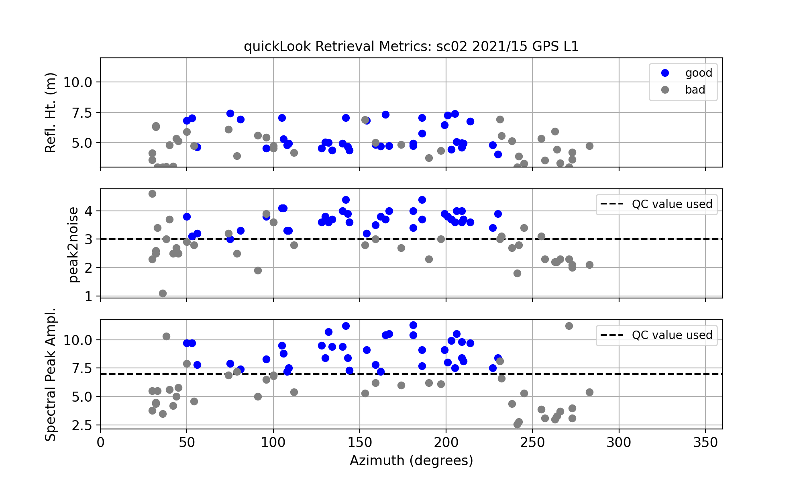
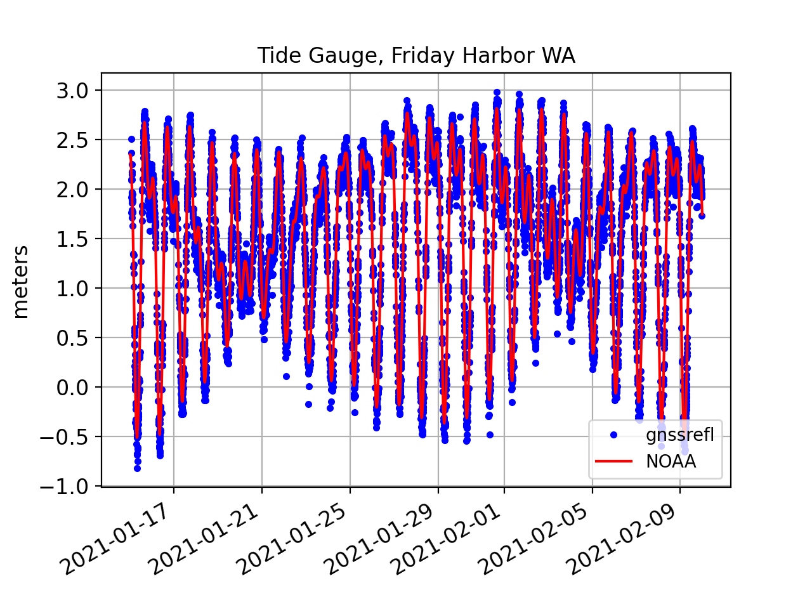

Friday Harbor

Station Name: sc02
Location: Friday Harbor, Washington, USA
Archive: UNAVCO
Ellipsoidal Coordinates:
Latitude: 48.546
Longitude: -123.008
Height: -15.049 m
Data Summary
There have been a lot of papers written about sc02. That being said, it is not an ideal GNSS reflections site. It is set back a bit too far from the shore - and it would have been far superior for reflections if the antenna were a bit taller. Furthermore, there are obstructions (docks). For further details, you are encouraged to read this early paper summarizing a comparison of 10 years of GNSS-IR results with the colocated tide gauge operated by NOAA. That paper only used the GPS L1 SNR data. Since that time a multi-GNSS receiver has been installed and there is an order of magnitude increase in the number of useable signals. Here we will only use the low-rate (15 sec) data from this new receiver. If you are interested, UNAVCO does have a 1-sec dataset available for use.
Take some time to look at the reflection zones webapp. The goal is to play with the different elevation angle settings and azimuths. This screen shot shows clearly that not all azimuths are going to work. But it does not tell you which elevation angles will be over water and which will not. The default will use mean sea level - but keep in mind that the reflector heights will not always be at mean sea level. so you might try using different reflector heights to see how those reflection zones change. We have data from the site, so you can check later to see which ones are the limiting reflector heights.

Take a quick look at the SNR data
Translate the GPS data for January 15 2021. First you need to make the SNR file:
rinex2snr sc02 2021 15
Use our utility uickLook with defaults (For more details on quickLook output):
quickLook sc02 2021 15
{kind=link}
These results for reflector height in the top panel are pretty bad (gray means the retrieval does not pass QC). Why? The reflector height defaults are restricted to 0.5-6 meters, which includes part of the tidal range, but not all of it. Furthermore, the default elevation angles of 5 to 25 degrees are not acceptable here, as these elevation angles include rocks and soil in addition to the water.
Now let’s make better choices. Following the suggestions of Larson, Ray, and Williams (2017), use elevation angle restrictions of 5 to 13 degrees and reflector height restrictions of 3 to 12 meters. And let’s use a modern GPS signal, L2C.
quickLook sc02 2021 15 -e1 5 -e2 13 -h1 3 -h2 12 -fr 20
{kind=link}
Now instead of vast numbers of unsuccessful reflector height retrivals, you can begin to see where the acceptable azimuths will be, ~50 to 230 degrees. A peak to noise ratio of 3 works pretty well. The Lomb Scargle periodograms show the retrievals in periodogram space. You can see here that the northwest is a dead zone for water reflections, and that was expected.

We can also check the retrievals stats for L1 to make sure these look good too.
{kind=link}
Measure Tides with GNSS-IR
We will not attempt to analyze a long time series, but instead focus here on the process. We will be using three+ weeks of GNSS data from 2021 as our sample dataset.
rinex2snr sc02 2021 15 -doy_end 40
Then you need to make the list of analysis inputs (stored in json format):
make_json_input sc02 48.546 -123.008 -15.049 -e1 5 -e2 13 -h1 3 -h2 12 -peak2noise 3.0 -allfreq True
Hand edit the json file to remove the unreliable azimuths and the Beidou signals because they are not in the RINEX 2.11 file Example json file.
Once you have the json file set up, you can go ahead and analyze all the data with a single command:
gnssir sc02 2021 15 -doy_end 40
This produces reflector heights for every rising and setting satellite track that meets the
quality control metrics that you have set. We have some preliminary code that will help you evaluate
these RH retrievals. It is a work in progress, so it does not do everything yet. It starts
by concatenating the daily results and applying a sigma outlier criterion . The default is set to
2.5 sigma, but you can enter on the command line a more or less stringent value:
subdaily sc02 2021
{kind=link}
The output is stored in a plain text or csv file. This code will
also apply the RH dot correction, but you have to
request it (-rhdot T). The spline_outlier optional input (in meters)
is only used in the rhdot section of the code.
Below are shown the initial solutions with a spline fit and outliers identified. Note: These figures were generated from an earlier version of the code, and should be updated.

Residuals to the spline fit with and without a RHdot correction:

A summary of the number of satellite arcs that are available:

Some statistics come to the screen that give you some perspective on the performance of the different frequencies and constellations. Note that there should be biases because we have not yet applied phase center corrections. This also shows that the RHdot correction should be applied at this site, as it does reduce the scatter. Once the phase center corrections are made, the precision will be further improved.
RMS no RHdot correction (m) 0.139
RMS w/ RHdot correction (m) 0.106
Freq Bias Sigma NumObs
(m) (m)
1 0.08 0.11 1025
20 -0.02 0.09 803
5 -0.04 0.09 615
101 0.06 0.09 613
102 -0.03 0.10 667
201 0.07 0.09 603
205 -0.04 0.08 616
207 -0.03 0.08 617
208 -0.05 0.08 616
This is a standard Lomb Scargle analysis of reflection data at sc02. Multiple authors have recommended using different analysis strategies, and you are most definitely encouraged to look at using these techniques. In most cases smoothness strategies are used to improve the retrievals.
I have recently posted Simon Williams tidal estimation code to python. I will do my best to add it to this package.
How well does this simple analyis compare to the official NOAA tide gauge data stream?
You can download the NOAA data yourselves or use our utility:
download_tides 9449880 20210115 20210209
We then compared the two series.
{kind=link}
Here is a list of some of the publications using data from sc02. If you would like me to add more, please send them via email.
Larson, Löfgren, Haas, Coastal Sea Level Measurements Using A Single Geodetic GPS Receiver, 2011
Löfgren, Haas, and Scherneck, 2014 Sea level time series and ocean tide analysis from multipath signals at five GPS sites in different parts of the world
Wang, Zhang and Zhang, 2018 Sea level estimation from SNR data of geodetic receivers using wavelet analysis